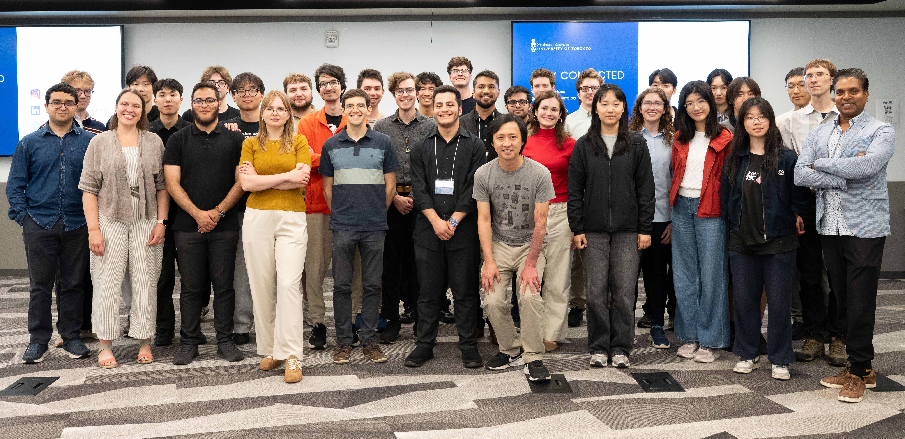

Work on a research question
Collaborate with other students on a theoretical or applied project, with guidance from faculty and graduate-student mentors.
A two-week summer research experience for undergraduate students interested in statistics, mathematics and data science. Explore new ideas, engage with research and connect with the statistical sciences community.
About UTSSRP
The University of Toronto Statistical Sciences Research Program (UTSSRP) is a two-week summer program that gives undergraduate students an opportunity to explore statistical research, engage with new ideas and develop skills that extend beyond their coursework.
Through research activities, focused learning and interaction with the statistical sciences community, participants will gain exposure to how statistical methods are developed and applied to questions across a range of disciplines.
Whether you're interested in pursuing research, considering further studies or simply looking to deepen your understanding of statistics and data science, UTSSRP offers an opportunity to challenge yourself, collaborate with other students and discover new academic interests.

The experience
The program brings together collaborative research, intensive learning and opportunities to connect with the statistical sciences community.
Collaborate with other students on a theoretical or applied project, with guidance from faculty and graduate-student mentors.
Take part in focused short courses that introduce ideas and tools from theoretical and applied statistics.
Hear about current research, emerging questions and the different paths people take through statistics and data science.
Develop your ability to explain research and communicate findings through a final presentation and poster-style showcase.
More than a summer course
Working with data is only one part of research. UTSSRP is also an opportunity to practise how to ask good questions, work through uncertainty and communicate what you learn.
Connect mathematical and statistical ideas to problems that do not always have straightforward answers.
Exchange ideas, approach challenges as a team and learn from peers and experienced researchers.
Practise turning complex analysis into clear explanations for an audience.
The 2027 program
The academic program is being developed for May 2027. The faculty supervisors, short-course topics, research projects and detailed schedule will be added as they are confirmed.
Course themes and instructors for the 2027 program will be announced once finalized.
Project descriptions, faculty supervisors and mentoring information will be published as they are confirmed.

Who should apply
UTSSRP is intended for undergraduate students who want to explore statistics, mathematics and data science through research. You might be interested in applying statistical ideas to a real-world challenge, learning more about a particular field or finding out what research looks like day to day.
Students from a range of academic communities are encouraged to learn more and share the opportunity with classmates, instructors and academic advisers.
The full eligibility criteria and any academic prerequisites for the 2027 cohort will be posted with the application information.

UTSSRP · May 3–14, 2027
Application instructions, eligibility requirements and key dates for the 2027 program are being finalized. Contact the program team to request application information and receive updates.